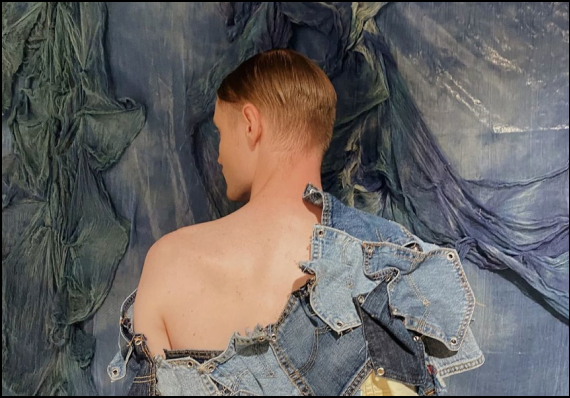

Мода на кастом
Команда RE*TRASH с удовольствием расскажет вам о преимуществах
апсайклинга и кастомизации на примере уникальной коллекции Kruzhok
бренда совместно с брендом Levi’s. Апсайклинг — это процесс
преобразования предметов, которые ранее были отброшены или
считались ненужными, в новые продукты с высокой ценностью.
Мы верим, что апсайклинг — это не только экологически
ответственный подход, но и способ создания уникальных и стильных
вещей.
99% одежды может быть переработано. Вы всегда можете сдать
ненужную одежду в благотворительный фонд.
Ваши мебельные предметы — это важная часть вашего дома.
Они создают атмосферу комфорта и уюта. Чтобы сохранить их
в хорошем состоянии на долгие годы, следует применять
некоторые лайфхаки, которые помогут уберечь мебель
от повреждений и сохранить ее красивый внешний вид.
Ниже мы собрали несколько советов, которые помогут вам
ухаживать за мебелью:

 Мы собали возможные лайфхаки с денимом:
Мы собали возможные лайфхаки с денимом:
Подрежь свои старые джинсы,
сохранив шов
сохранив шов
Подрежь свои старые джинсы
без шва.
без шва.
Сделай прорези и дырки.
Просто обесцветь.